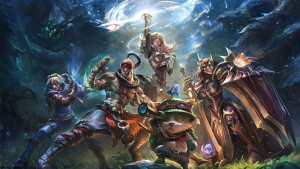

História do jogo League of Legends
Foi lançado em outubro de 2009 para Microsoft Windows e em março de 2013 para macOS. Inspirado em Defense of the Ancients (DotA), uma modificação de Warcraft III, os fundadores da Riot buscaram desenvolver um jogo autônomo do mesmo gênero.
O league of Legends antes e o atual
Há 13 anos atrás o jogo foi lançado, tempo bastante esse para haver bastante mudanças, e elas foram brutais! Desde o desing de itens, skins, personagens, o próprio jogo em si, no que se diz respeito ao mapa e a tudo de maneira geral. Mas sempre prezavam por ter a essência da competitividade e cooperatividade dentro do jogo. As imagens acima mostram um antes e depois do mesmo.
Seus criadores e quem são eles
O início de tudo. League of Legends é um nome que automaticamente está associado à Riot Games. A empresa surgiu em 2006 na cidade de Los Angeles, nos Estados Unidos, fundada por Brandon "Ryze" Beck e Marc "Tryndamere" Merril. O grande propósito dos dois era trazer jogos inovadores e focados no ambiente multiplayer.
Marc Merrill nasceu em 17 de agosto de 1980, na Califórnia, sob o signo da constelação de Leo e possui nacionalidade americana. Marc tem uma forte paixão por jogos, que desenvolveu quando era jovem. Ele foi para a universidade e aprendeu a desenvolver jogos lá.
A ideia inicial
Os dois pensavam em lançar uma experiência focada no multiplayer online, sem planos para cópias físicas, sequências ou conteúdo extra em downloads (DLCs). Além disso, já queriam oferecer um jogo gratuito, com transações financeiras apenas como recurso opcional.
De onde surgiu a inspiração
inspiração em Mod de Warcraft III: The Frozen Throne Os dois principais mentores de League of Legends foram Steve Feak, game designer de Defense of the Ancients e Warcraft III: The Frozen Throne, e Steve Pendragon, criador do antigo mapa de Dota
Então é isso! Espero que você tenha gostado do nosso artigo com essa curiosidade e também hiistória sobre o nosso querido lolzinho.